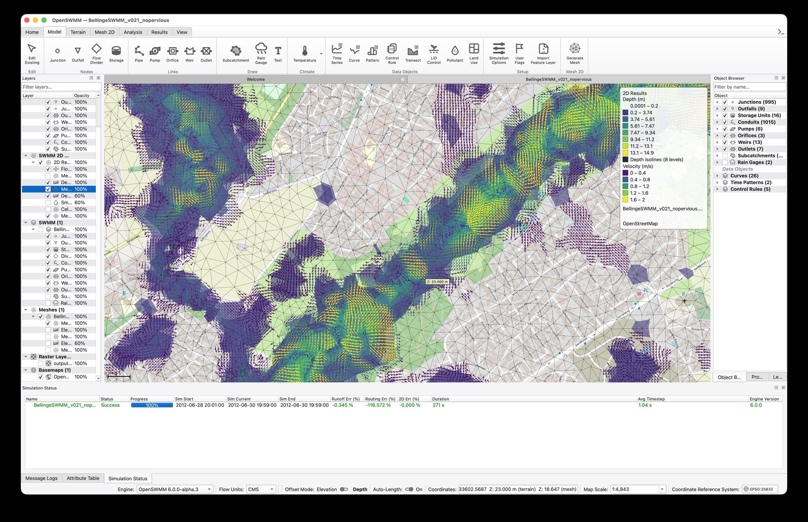
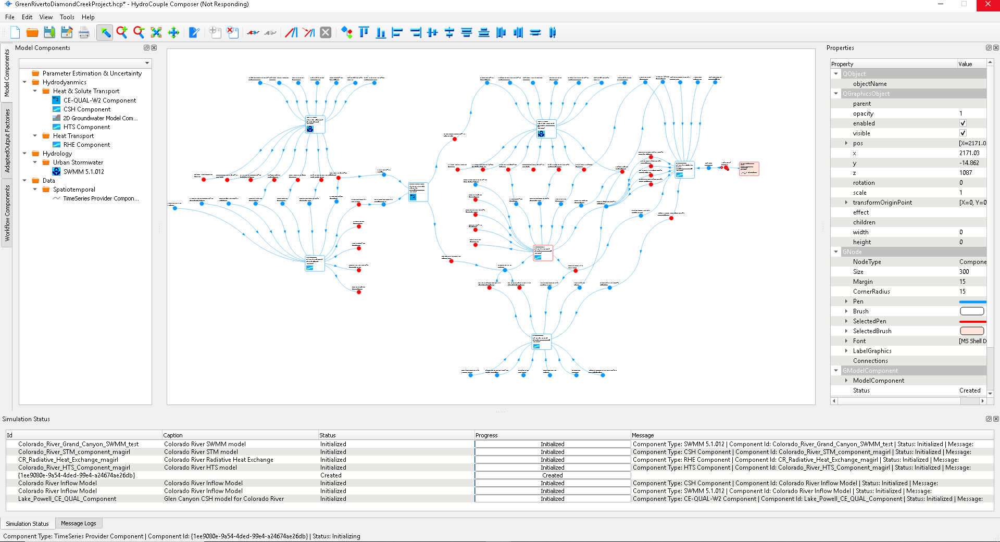

The HydroCouple Open-Source SWMM initiative delivers a next-generation SWMM as the flagship, plus a growing set of couplable components around it, so the same standards-based composition can grow from a single sewer model into a representation of the entire water cycle, from watersheds and aquifers to streams, lakes, and estuaries.
A community-driven continuation of EPA's Storm Water Management Model: the trusted process formulations, rebuilt on a modern architecture and validated against published benchmark suites, preserving the SWMM legacy under rigorous QA/QC while opening it to the future.
Hydrology, water quality and coupled 1D/2D hydraulics with Python access, GeoPackage I/O and portable GPU backends.
WebAssembly (Wasm). openswmm.engine.wasm brings JavaScript/TypeScript simulation, controls and results to browsers and Node.js.
Source → · PyPI → · Docs → · Python Docs →
SWMMVis brings model building, simulation and results into a GIS-based desktop workspace. Edit networks and properties on a map, manage spatial layers, and inspect time series and coupled 1D/2D flood results against terrain and basemaps.
Model Context Protocol access lets AI assistants build and edit models, run simulations, query results and apply controls. Catalog-based tools expose engine capabilities, while reusable workflows support capacity assessment, calibration and operational optimization.
Gymnasium environments connect reinforcement learning to stormwater design and operation. Train and compare policies for gates, pumps and storage, with configurable observations, actions and rewards. Bundled scenarios support real-time control, capital improvement planning and joint design–operation studies.
Updated groundwater, wet-weather inflow and routing formulations support connected catchment studies. Features include two-zone groundwater, physics-based rainfall-derived infiltration and inflow (RDII) recovery, runtime climate and evapotranspiration forcing, consistent rain–snow partitioning and accelerated dynamic-wave convergence.
An open benchmarking platform compares engines with analytical solutions, published test cases and reference solvers. Automated checks track stability, mass balance, numerical accuracy and performance. Continuous integration and security analysis support transparent verification and reproducible regression testing.
The tools in practice: the new engine and GUI resolving coupled 1D/2D urban flooding, and the Composer wiring components into coupled compositions.


Additional captures of the v6 engine are on the way: GPU-accelerated 2D solver runs, GeoPackage results exploration, terrain and mesh generation workflows, and agent-driven modeling sessions through the MCP tooling.
A model that governs public infrastructure decisions has to prove itself continuously. The OpenSWMM Benchmarks project is an open, engine-agnostic benchmarking and regression-testing platform for SWMM-compatible engines: a corpus of 1,396 models (EPA and OWA regression examples, the EXTRAN manual problems, the EPA QA suite with its original SWMM4 references, analytical problems with exact solutions, and real-world networks) run automatically and compared along the dimensions practitioners actually care about.
Does the solver converge? Does the timestep collapse? Runoff, routing, and quality continuity error tracked on every run.
Every subcatchment, node, link, and system variable, including pollutants, at every reported timestep, plus L1/L2/L∞ error norms and observed convergence order against exact solutions.
Wall-clock time per model per engine, tracked historically, so every speedup and every regression is documented with data.
Only cases with a genuine exact solution can show an engine is wrong; the rest can only show that engines differ. The platform keeps these apart deliberately: error norms are computed for truth-class cases alone, and the verification and regression scores are separate, separately-badged numbers. "1,396 models pass" is a regression claim and is always labeled as such.